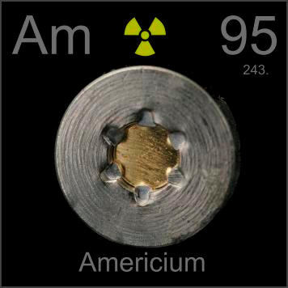

HOME
PREVIOUS
NEXT

Americium
Atomic Weight: 243[note]
Density: 13.67 g/cm3
Melting Point: 1176 °C
Boiling Point: 2011 °C
A radioactive button like this is inside most smoke detectors. A trace of americium creates charged particles that betray the smoke. Americium is thus the only man-made element available in grocery stores.